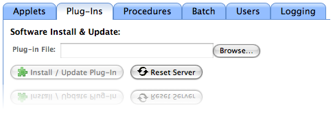
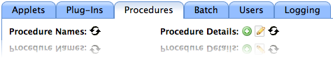
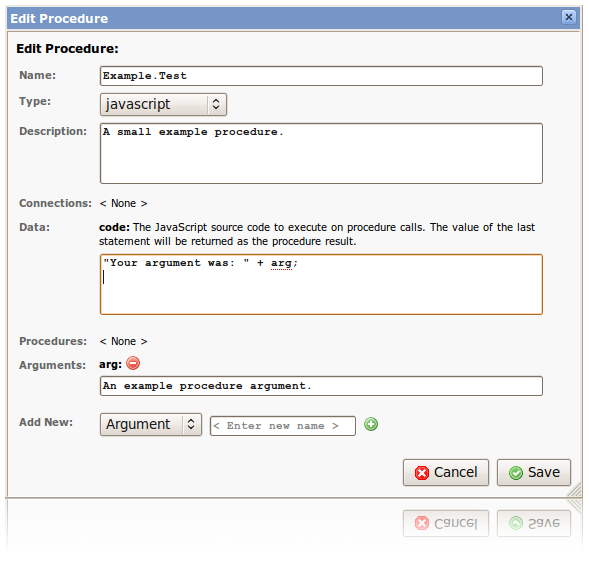

RapidContext server programming is based on Java, JavaScript and the specific languages used for communication with external systems (such as SQL). Server functionality is added by plug-ins, a ZIP file containing Java libraries, procedures, apps, configuration or file data. The API:s exposed by the server to the client is file retrieval (HTTP GET), file upload (HTTP POST to a specific URL) and a set of callable procedures.
Plug-ins are installed or updated by using the built-in Admin app. The steps below explains how to install or update a plug-in:

Plug-ins can also easily be loaded and unloaded through the built-in
Admin app. Once unloaded, the plug-in directory under
plugin can be removed to completely uninstall it. In certain
circumstances, the web browser and/or the server must also be restarted
for the plug-in loading or unloading to have effect:
All installed plug-ins are stored unpacked in the plugin
directory. Each plug-in is stored in its own subdirectory based on the
unique plug-in identifier. A few plug-in identifiers are reserved with a
special meaning:
system — A plug-in that provides all the platform
built-in functionality. In essence, a platform update consists of
replacing this plug-in with a new version. This plug-in is always
searched last, meaning that any file in it may be fully replaced by
an equally named file in another plug-in.local — A plug-in the provides all the local
modifications to the default platform settings. In particular this
plug-in usually stores the config.properties file that
lists which plug-ins should be loaded on startup. This plug-in is
always searched first, meaning that any file in it will always
override an equally named file in another plug-in.When installing a plug-in, the contents of the ZIP file is just unpacked
into the corresponding plugin/<plug-in id> directory.
The plug-in directories and their corresponding ZIP files are all structured
in the same way. The list below explains the standard files and directories:
plugin.properties -- The plug-in manifest file (see below) files/ -- Contains all files mapped to URL:s lib/ -- Contains Java JAR libraries to load app/ -- Contains app configuration files procedure/ -- Contains procedure configuration files environment/ -- Contains environment configuration file(s) role/ -- Contains role configuration files user/ -- Contains user configuration files
The files sub-directory is special in that it automatically
maps the files inside onto URL:s. This is the standard way to provide
JavaScript source files, images and other resources needed by the apps
running in the web browser.
Each plug-in must contain a plugin.properties manifest file.
It is the only mandatory content of a plug-in and consists of the following
fields:
id — The unique plug-in identifier. May only contain
ASCII alphanumeric characters without spaces or separators.name — The plug-in name as presented to the users.version — The plug-in version number.description — The optional description text that
explains what functionality in provided by the plug-in.className — The optional fully qualified name of
a Java class that is loaded to initialize the plug-in. The class must
subclass org.rapidcontext.app.plugin.Plugin and handled the
lifecycle of the plug-in.The plug-in manifest is the first file to write when developing a plug-in.
An example plugin.properties file is illustrated below:
# General properties
id = example
name = Example Plug-in
version = 1.0
description = Provides tests and examples for the platform.
className = org.rapidcontext.app.plugin.example.ExamplePlugin
Once the plugin.properties file has been created, the template
src/plugin/build.xml file can be copied into the root of the
plug-in development folder. With this Ant build file, it is easy to package
the plug-in ZIP file for installation.
Most common server-side operations can be achieved by creating one or more procedures. A procedure is a server-side operation that can be invoked from the client or from other procedures. The operation may take arguments, modify data and/or return a value depending on implementation.
Each procedure has a specific procedure type. The procedure type defines which server-side Java code is used to execute the procedure. Since most server-side operations are so similar, only a few different procedure types are actually needed. So most procedures are instead created by configuring one of the standard procedure types available. The standard procedure types are listed below:
built-in — The built-in procedure type, used for
non-configurable procedures implemented directly in Java code. This
procedure type is normally only used for platform operations.cmdline.exec — The command-line execution procedure
type, used for running shell commands on the server. Procedure arguments
may be inserted as arguments on the command-line.http.post — The HTTP POST request procedure type,
used for sending dynamic data to a receiving URL. Procedure arguments
may be inserted into the request headers and/or data.javascript — The JavaScript procedure type, used
for fully dynamic control of the execution. Procedure arguments may
be provided as global variables for the JavaScript code upon
execution.jdbc.query — The JDBC SQL query procedure type,
used for SQL SELECT queries returning results. Procedure arguments
may be inserted as literals into the SQL text.jdbc.statement — The JDBC SQL statement procedure
type, used for SQL INSERT, UPDATE and DELETE statements (and others).
Procedure arguments may be inserted as literals into the SQL text.By installing additional plug-ins, more procedure types can become available. It is possible to edit or create new procedures of any registered procedure type in the Admin app. Below is a screenshot showing the location of the add and edit procedure buttons:

By storing SQL queries, JavaScript code or similar as configuration parameters, it is possible to create advanced procedures easily without writing any Java code at all. Each procedure configuration parameter has a specific type, as listed below:
Editing the procedure and the procedure configuration parameters is easy in the Admin app, as shown in the screenshot below:

Once created or modified, the procedures edited in the Admin app are
stored in the local plug-in, in the procedures
directory. From that location the files may be copied into the corresponding
plug-in development folder for procedures.
The environment contains a list of named connections. Each connection
name is associated with a set of parameters for creating new connnections.
The creation parameters depend what each adapter requires and may contain
IP addresses, user names, passwords and similar. There is currently no
user interface for editing or creating environment files, so they must
be manually created as environment/<name>.properties in
one of the plug-ins. See below for a simple example environment file.
# Environment information name = EXAMPLE description = The example environment # Pool 0 configuration pool.0.name = jdbc.example pool.0.adapter = jdbc pool.0.param.maxConnections = 10 pool.0.param.maxIdleSecs = 600 pool.0.param.driver = com.mysql.jdbc.Driver pool.0.param.url = jdbc:mysql://localhost:3306/example_database pool.0.param.user = example pool.0.param.password = password pool.0.param.sqlping = SHOW DATABASES pool.0.param.timeout = 45 # Pool 1 configuration pool.1.name = http.ncbi.entrez pool.1.adapter = http pool.1.param.maxConnections = 0 pool.1.param.url = http://eutils.ncbi.nlm.nih.gov/entrez/
The environment also keeps a pool of established connections. The connection pools are used to minimize the overhead of creating and closing connections, as well as providing a mechanism to limit the resource usage in the server. Connections are created or reserved automatically before processing user requests. This enables detection of resource shortages before any actual operations are made. All connections reserved also participate in the same transaction (if supported) and will be committed or rolled back in sequence.
Note: A RapidContext server may only have a single environment loaded. This environment (and all its connections) is shared between all apps, procedures and users on the server. If several environment are required, separate RapidContext server instances must be used.